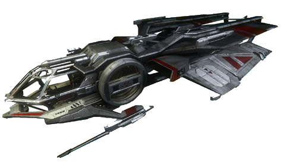

L'aurora est le descendant moderne du vaisseau X-7 de Robert Space Industries. Utilitaire, l'Aurora est le vaisseau parfait pour les débutants: ce qui lui manque en style, il le compense par sa modularité et sa possibilité d'améliorations. La plupart des pilotes commencent par un Aurora avant de changer de vaisseau dès que leurs crédits le permettent mais quelques uns préfèrent voler à l'intérieur de celui-ci considérant cela comme un honneur!